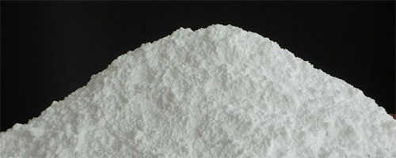
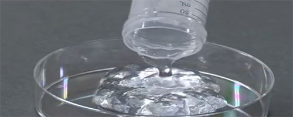

일관화공장
-
- 국내외 조림사업 추진
- 국내 최대 자작나무 숲 강원도 인제(2,000ha)와 인도네시아(64,000ha)조림 사업을 진행하고 있습니다.
-
- 국내 유일의 펄프 생산
- s지합, 평활도, 벌크, 불투명도,고해도 등 품질 적성이 뛰어난 활엽수 표백화학펄프를 생산하고 있습니다.
-
- 섬유질이 살아 있는 종이
- 건조펄프가 아닌 바로 옆 펄프공장에서 액체 상태의 생펄프를 공급받아 섬유질이 살아있는 우수한품질의 종이를 생산하고 있습니다.
펄프는, 새로운 가능성입니다.
무림P&P 일관화공장에서 생산하고 있는 펄프는 종이를 생산하는 용도 이외에 신소재로서의 활용 가치가 풍부합니다. 자연 성분인 펄프로, 화학물질들로 구성되 있던 성분들을 대체할 수 있는 가능성을 제시하고자 활발한 연구개발이 진행되고 있습니다
-
- 결정셀룰로오스(MCC)
- 펄프에서 추출된 셀룰로오스를 분말 형태로 만든 것이며, 흰색에서 회백색을 띠는 결정성 가루로 냄새와 아무 맛이 없는 것이 특징.
- 고체의 형태 유지에 탁월하며, 높은 흡착력과 함께 액체 상태의 물질에 첨가시 점도를 높이는 기능이 있음
- 활용 : 알약 등의 약제, 젤 타입 식품, 가루 타입 화장품, 비누, 향료, 살균제 등
-

- 펄프파우더(Pulp Powder)
- 펄프를 분쇄한 가루로, 목재 또는 톱밥을 갈은 ‘목분’과 보다 색상을 표현하는 능력과 강도가 더 탁월함.
- 활용: 벽돌, 단열재, CRC보드 등 건축 소재, 지점토, 플라스틱 또는 합성피혁 가공 시 친환경 소재로 대체 가능
-

- 셀룰로오스 나노파이버(CNF)
- 섬유의 폭 또는 길이가 직경 100nm 미만인 아주 작은 나노 수준의 셀룰로오스 섬유
- 재생가능성, 생분해성, 생체적합성 등의 성질 및, 친수성, 보수성 등 유용한 특성이 많아 응용분야가 넒음.
- 활용: 보습용 화장품, 필름, 식품 및 의약품 포장재 등
추출과정이나 처리방법에 따른
신소재 성분 변화
신소재 성분 변화
| 펄프 | ||
|---|---|---|
| 기계/ 화학 처리 |
결정셀룰로오스 | 결정셀룰로오스 재생 섬유 |
| 기능성 당 | 셀룰로오스 나노파이버 | |
| 기계 처리 | 펄프파우더 | |